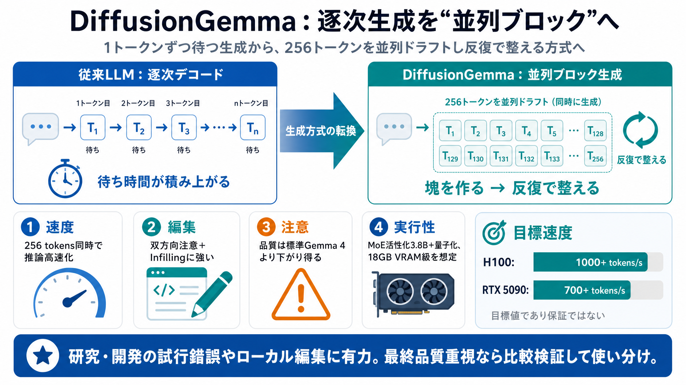

DiffusionGemma: 4x faster text generation - Google Blog
DiffusionGemma: 4x faster text generation. ["What is the Fitbit Air?", "How can I learn new AI skills?", "What's the lat…

逐次（1トークンずつ）をやめ、256トークン分を並列に生成し反復で整える――“速さのための生成方式転換”を狙う実験モデルです。
多くのLLMは左から右へ“1トークンずつ”出力します。そのためGPUは計算だけでなく、次の一手を待つ時間がボトルネックになりやすいです。
DiffusionGemmaは文章生成を“塊（ブロック）”単位に切り、最大256トークンを同時にドラフトします。その後、複数回の反復で整合性を高めます。
並列化された各トークンが互いを参照できる（双方向アテンション）。その結果、コード補完や infilling、数理構造などの“編集しながら作る”作業で強みが出るとされています。
記事が強調する設計意図を、速度・編集・品質リスク・メモリ面に分けて整理します。
並列デコードが計算へ効率的に寄ることで、専用GPUでトークン出力が伸びることを狙っています。
記事は明確に、DiffusionGemmaは標準のGemma 4の“本番品質”に劣る可能性があると注意しています。用途で選び分ける必要があります。
クラウドで高QPS提供をする場合、自己回帰モデル側も大量バッチで効率化できるため、DiffusionGemmaの並列化優位は逓減し得ます。
26Bという総パラメータでも、推論時に活性化するのは3.8B。さらに量子化でVRAM負荷を下げ、18GB級のGPUで動かしやすい方針が示されています。
DiffusionGemmaの意義は、速度を“最適化”だけでなく“生成アルゴリズム（逐次→並列）”から変え、ローカルの待ち時間や編集体験を改善しようとする点にあります。
DiffusionGemma: 4x faster text generation. ["What is the Fitbit Air?", "How can I learn new AI skills?", "What's the lat…
[Sign in](https://medium.com/m/signin?operation=login&redirect=https%3A%2F%2Fgregrobison.medium.com%2Fa-comparative-anal…
1. Unlike normal autoregressive models, diffusion models can generate correct parts of the final token sequence in paral…
# Diffusion Language Models: The New Paradigm. Diffusion Language Models represent the most significant architectural in…
| **2026-06-03** | **SAID: Accelerating Diffusion-Based Language Models via Scaffold-Aware Iterative Decoding** | cs.CL …